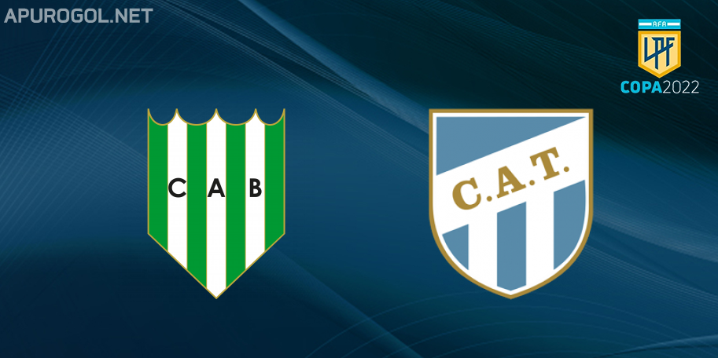

El proximo partido es contra Banfield

La ultima fecha del torneo LPF de Argentina, Atletico medira fuerzas contra Banfield el 9/05 del 2022.
La fecha anterior el Decano ganó 3-0
El "DK" se enfrentó ante Talleres de Cordobá, partido en cual se impuso por 3-0 de local.